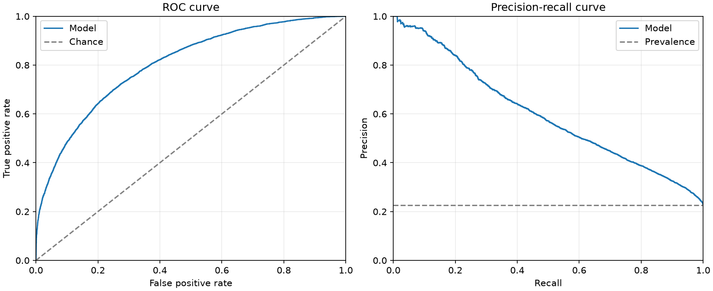
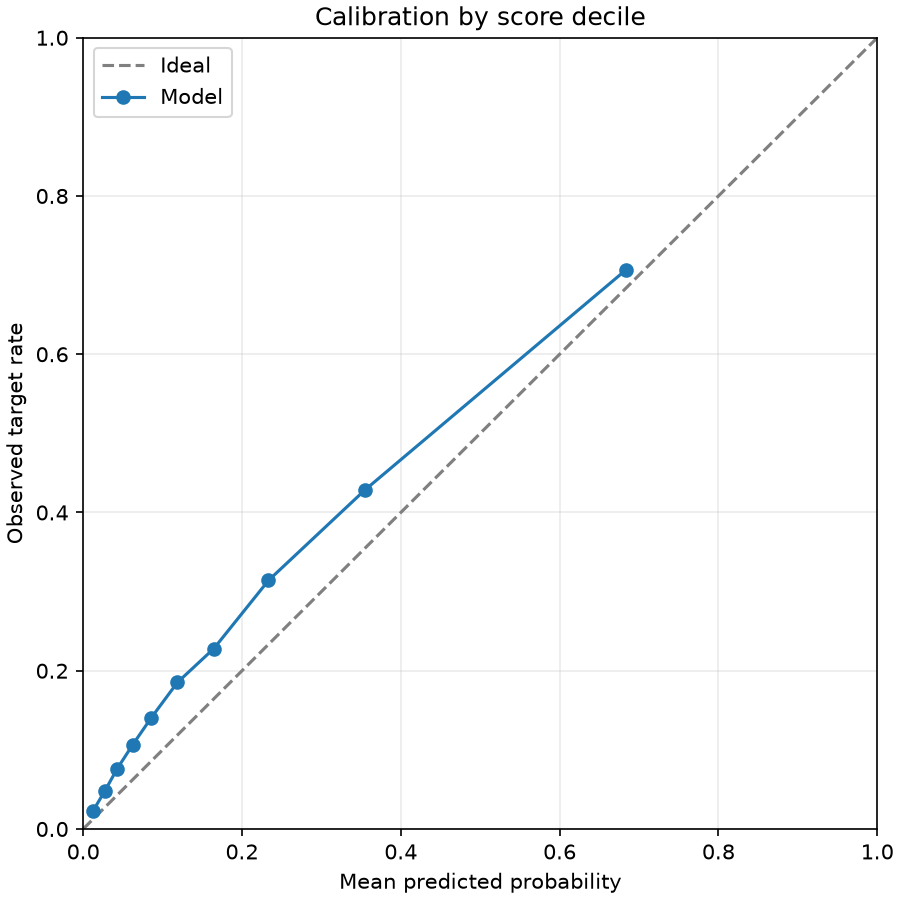
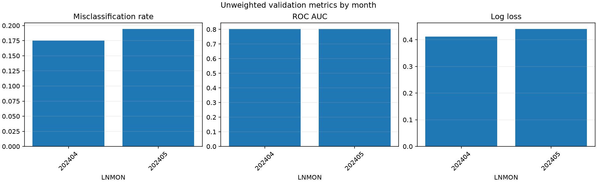
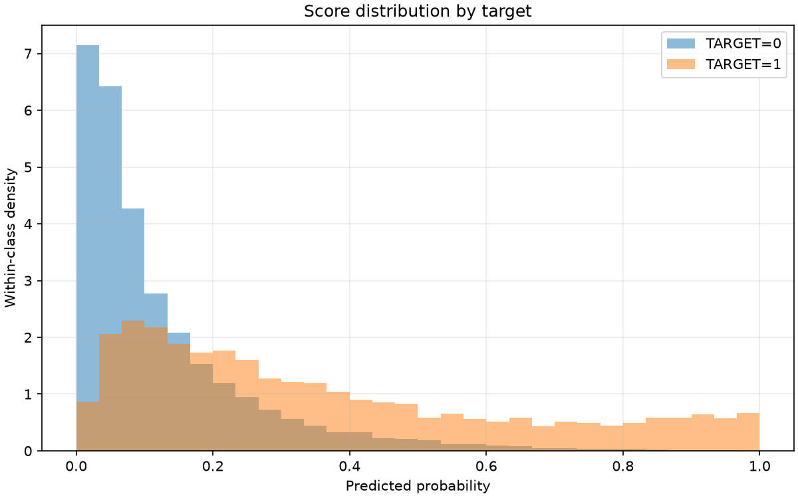

Training history

Final validation misclassification rate (overall_unweighted, probability > 0.5): 0.185048
Validation months: 202404, 202405. The training-history figure reflects the model's original training validation protocol. The results describe the supplied undersampled data and are not independent test scores.
| scope | month | rows | target_1_rows | target_1_rate | misclassification_rate | roc_auc | average_precision | log_loss | brier_score |
|---|---|---|---|---|---|---|---|---|---|
| overall_unweighted | all | 28679 | 6470 | 0.22560 | 0.18505 | 0.80333 | 0.59913 | 0.42693 | 0.13458 |
| monthly_unweighted | 202404 | 13966 | 2989 | 0.21402 | 0.17500 | 0.80385 | 0.58917 | 0.41199 | 0.12887 |
| monthly_unweighted | 202405 | 14713 | 3481 | 0.23659 | 0.19459 | 0.80274 | 0.60858 | 0.44110 | 0.14000 |
The first row is the metric recorded during training; the second row scores the selected validation protocol with the same metric.
| evaluation | protocol | months | month_weighted | metric | score |
|---|---|---|---|---|---|
| training_protocol | v2 | 202403,202404,202405 | True | logloss | 0.39867 |
| selected_protocol | v1 | 202404,202405 | False | logloss | 0.42693 |




| decile | rows | weight_sum | mean_probability | observed_target_rate |
|---|---|---|---|---|
| 1 | 2868 | 2868.00000 | 0.01211 | 0.02232 |
| 2 | 2868 | 2868.00000 | 0.02709 | 0.04777 |
| 3 | 2868 | 2868.00000 | 0.04297 | 0.07636 |
| 4 | 2868 | 2868.00000 | 0.06229 | 0.10635 |
| 5 | 2868 | 2868.00000 | 0.08597 | 0.14086 |
| 6 | 2868 | 2868.00000 | 0.11861 | 0.18515 |
| 7 | 2868 | 2868.00000 | 0.16455 | 0.22803 |
| 8 | 2868 | 2868.00000 | 0.23337 | 0.31416 |
| 9 | 2868 | 2868.00000 | 0.35487 | 0.42852 |
| 10 | 2867 | 2867.00000 | 0.68356 | 0.70666 |
The final classification score uses 0.5; other thresholds are diagnostics only.
| threshold | weighted_true_positive | weighted_false_positive | weighted_true_negative | weighted_false_negative | misclassification_rate | precision | recall | specificity | predicted_positive_share |
|---|---|---|---|---|---|---|---|---|---|
| 0.10000 | 5344.00000 | 9006.00000 | 13203.00000 | 1126.00000 | 0.35329 | 0.37240 | 0.82597 | 0.59449 | 0.50037 |
| 0.20000 | 4096.00000 | 4279.00000 | 17930.00000 | 2374.00000 | 0.23198 | 0.48907 | 0.63308 | 0.80733 | 0.29203 |
| 0.30000 | 3092.00000 | 2167.00000 | 20042.00000 | 3378.00000 | 0.19335 | 0.58794 | 0.47790 | 0.90243 | 0.18337 |
| 0.40000 | 2347.00000 | 1187.00000 | 21022.00000 | 4123.00000 | 0.18515 | 0.66412 | 0.36275 | 0.94655 | 0.12323 |
| 0.50000 | 1791.00000 | 628.00000 | 21581.00000 | 4679.00000 | 0.18505 | 0.74039 | 0.27682 | 0.97172 | 0.08435 |
| 0.60000 | 1404.00000 | 316.00000 | 21893.00000 | 5066.00000 | 0.18766 | 0.81628 | 0.21700 | 0.98577 | 0.05997 |
| 0.70000 | 1074.00000 | 154.00000 | 22055.00000 | 5396.00000 | 0.19352 | 0.87459 | 0.16600 | 0.99307 | 0.04282 |
| 0.80000 | 762.00000 | 68.00000 | 22141.00000 | 5708.00000 | 0.20140 | 0.91807 | 0.11777 | 0.99694 | 0.02894 |
| 0.90000 | 405.00000 | 18.00000 | 22191.00000 | 6065.00000 | 0.21211 | 0.95745 | 0.06260 | 0.99919 | 0.01475 |